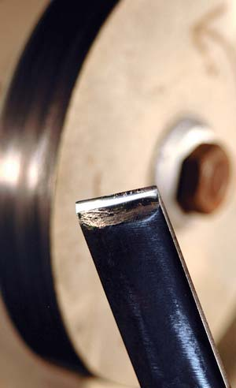

The best way to sharpen tools, such as wood chisels, plane irons and knives, doesn’t necessarily involve sharpening stones. Even though I own a dozen fancy stones, I don’t use them anymore. Instead, I turn to my shop-built buffing wheel, because it works so quickly and so well. It’s also very simple.
Picture a hard felt disk about 8 inches in diameter and 1 inch wide, its edge saturated with a fine, waxy abrasive compound, mounted on a spindle spun by a motor. That’s all there is to a buffing wheel. You press the edge of a dull tool against the edge of the spinning wheel, and in a minute or so it’s sharp enough to shave hair cleanly.
You’ll need to address a couple of preliminary details to assure consistent success. Before using the buffing wheel, grind the tool edge to the proper angle. For conventional woodworking chisels and plane irons, this means a tip angle of 25 to 30 degrees. Most new tools come ground to an acceptable angle, though eventually you will have to re-establish this angle. Tool angles get blunt after repeated use and honing. And don’t procrastinate; once you get past a bevel angle of about 40 degrees, you won’t be able to hone a sharp edge, regardless of the sharpening system you use.
A bench grinder with a cool-running abrasive wheel is a good choice for correctly shaping woodworking tools before final honing. Cool-running wheels are made of aluminum oxide with a relatively soft bond and cause much less heat buildup on the tool than regular grinding wheels. This is significant - if a chisel or plane iron gets too hot to touch, the properties of the steel will change so that it can’t hold an edge for very long. Even with a cool-running wheel, dip the tool tip in water after every three or four seconds of grinding time, just to be safe.
For successful grinding, mark a 30-degree angle on a piece of paper, or use an unworn tool as a visual reference. Hold the edge of the dull tool steady at a 30-degree angle to the edge of the spinning grinding wheel, with the edge pointing in the opposite direction as the rotation of the wheel. Always use a rest to support a tool while grinding. Besides being necessary for accuracy, it’s crucial for safety - it will prevent the tool from being caught and hurled dangerously.
For honing, mount a hard felt buffing wheel on the bench grinder. For best results, set the wheel to spin at anywhere from 1,700 rpm to 3,400 rpm. Hold a block of buffing compound against the rotating edge of the felt wheel. This embeds fine abrasive particles in the felt, which actually do the work of honing. Instead of using arm power to rub the tool over an abrasive sharpening stone, light pressure against the spinning wheel does the job. Support the tool at a 30-degree angle to the wheel, but point the tool in the same direction as the buffer’s rotation - the reverse of the position used for grinding. This prevents the tool from being caught and flung. You don’t need to press hard.
For best results, hone both sides of the edge. In no time, the metal will be shining like a mirror. In fact, a buffing wheel removes metal quickly enough that you can use it to remove the small nicks that develop in blades of all kinds.
Check out Choosing the Best Chisel for Every Project for great tips on selecting tools.
|
 STEVE MAXWELL While sharpening stones can work well, buffing wheels offer a quick and effective alternative method for tool sharpening. |
|
|